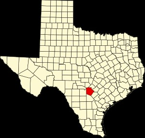
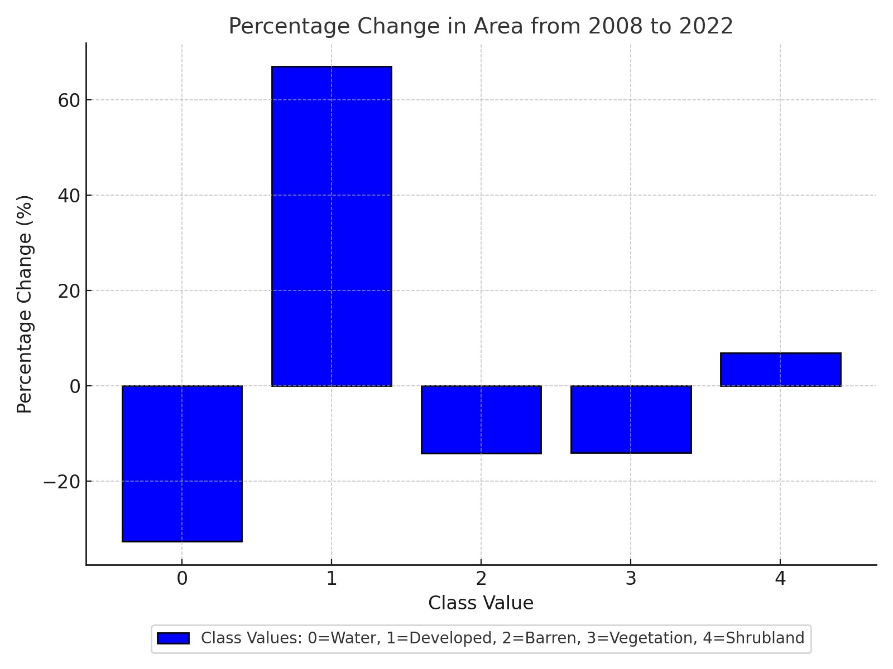
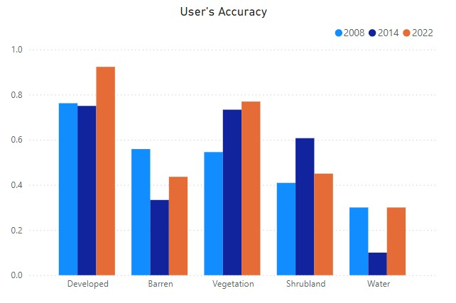
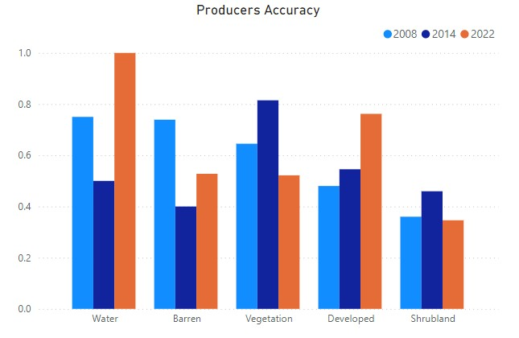

Urban Expansion and Land Use Classification: A Case Study of San Antonio, Bexar County, Texas
Stanley Osondu · Course final project · Fall 2024 · ArcGIS Pro, NAIP imagery
Remote sensingLand-cover classificationChange detectionUrban sprawlArcGIS Pro
Summary
This study maps how urban development spread across Bexar County, Texas, between 2008 and 2022, and what land it replaced.
Aerial imagery for 2008, 2014 and 2022 was classified into five land-cover types, checked against reference points,
and compared year to year. Developed land grew by roughly two-thirds over the period, while water, barren land and
vegetation all declined. The results give planners a baseline for managing growth and protecting agricultural land.
Introduction
San Antonio and the surrounding county are among the fastest-growing places in Texas. As the city expands outward,
farmland, pasture and natural vegetation are converted to housing, roads and commercial land. These changes affect
ecosystems, water resources and the long-term cost of public services, but they happen gradually and are hard to
measure from the ground.
This project uses remote sensing to measure that change directly. The focus is on two questions: how much urban
expansion has taken place, and how much of it has come at the expense of agricultural and natural land. The answers
are meant to support urban planning, environmental conservation and an understanding of population growth patterns
across the county.
Problem statement
Urban sprawl in Bexar County has led to significant land-cover change, including the conversion of agricultural land
into urban areas. However, there is limited understanding of the extent, patterns and dynamics of these changes.
This study addresses that gap by analysing land-cover change from 2008 to 2022 and quantifying the impact of urban
expansion on agricultural ecosystems.
Objectives
Understand the extent of urban sprawl in Bexar County using remote sensing techniques.
Analyse land-cover changes between 2008 and 2022.
Analyse how urban expansion encroaches on agricultural land, quantifying the extent and pattern of land conversion over time.
Study area
Bexar County lies in South Texas and covers about 1,256 square miles (3,250 km²). Its county seat is San Antonio.
The county was created on December 20, 1836, and had an estimated population of 2,115,167 in 2024 (U.S. Census Bureau).
It is Texas's most populous majority-Hispanic county and the third-largest such county in the nation.

Figure 1. Location of Bexar County in South Texas.
Data and methods
Data. The study uses high-resolution aerial imagery from the National Agriculture Imagery Program (NAIP),
distributed by the U.S. Department of Agriculture, for 2008, 2014 and 2022.
Classification. Each year's imagery was classified with a supervised Maximum Likelihood classifier into five
land-cover classes: water, developed, barren, vegetation and shrubland.
Accuracy assessment. Each classified map was validated against 100 reference points per year, and user's and
producer's accuracy were calculated for every class.
Change analysis. The three classified maps were compared to detect land-cover transitions (for example,
shrubland to developed), and the developed class was extracted for each year to map urban expansion. All mapping
and spatial analysis was done in ArcGIS Pro.
Results
Classified land cover, 2008–2022
The three classified maps show developed land (red) radiating out from central San Antonio along major roads,
and filling in more of the county with each map. Vegetation remains concentrated in the north of the county, while
much of the south and east is barren or lightly vegetated land.
Figure 2. Classified land cover of Bexar County. Click any map to view it full size.
Urban development
Isolating the developed class makes the spread of the city easier to see. Between 2008 and 2022, development fills in
the area around the urban core and extends outward along transport corridors, with new clusters appearing at the
edge of the county.
Figure 3. Developed land extracted from each classified map.
Change detection and urban expansion
The change detection map records every land-cover transition between 2008 and 2022. The urban expansion map
overlays the developed area from all three years, so that the newest development (darkest red) stands out against
land that was already developed in 2008.
Figure 5. Urban expansion in Bexar County, 2008–2022.
How much land changed
Developed land increased by roughly 67% between 2008 and 2022, the largest change of any class. Water fell by roughly
a third, barren land and vegetation each fell by roughly 14%, and shrubland rose by about 7%. Values are read from
Figure 6.
+67%Developed
−33%Water
−14%Barren
−14%Vegetation
+7%Shrubland

Figure 6. Percentage change in area by class, 2008–2022 (0 = water, 1 = developed, 2 = barren, 3 = vegetation, 4 = shrubland).
Classification accuracy
Accuracy was highest for the developed class, which is the focus of the study: its user's accuracy was about 0.76 in
2008 and 2014 and about 0.92 in 2022. Vegetation was also classified fairly reliably. Water, barren land and shrubland
were harder to separate, with lower and more variable accuracy, which is common when spectrally similar classes are
classified from aerial imagery.

Figure 7. User's accuracy by class.

Figure 8. Producer's accuracy by class.
Challenges and future work
The main challenges were cloud cover and data-quality issues in parts of the imagery, the computing resources needed
to process high-resolution data for a whole county, and the trade-off between classification accuracy and processing
time. Future work could refine the classification algorithms to improve accuracy for the weaker classes, and add hot spot analysis to identify where expansion is most concentrated.
Conclusion
The study provides a county-wide picture of urban sprawl in San Antonio and Bexar County between 2008 and 2022.
Developed land grew substantially, largely at the expense of barren land, vegetation and water, showing how
spatial analysis can reveal the effect of growth on agricultural and natural land. These results support data-driven
recommendations for sustainable development and inform decisions on urban and environmental policy.